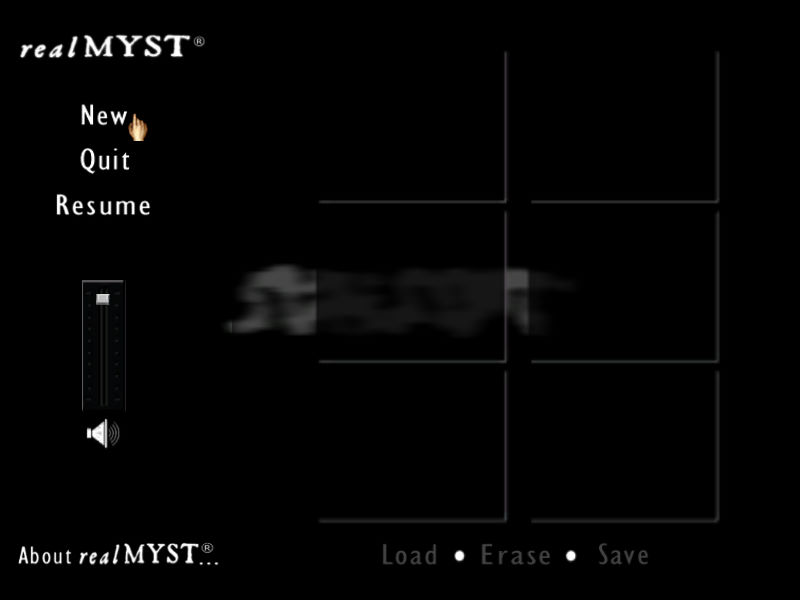
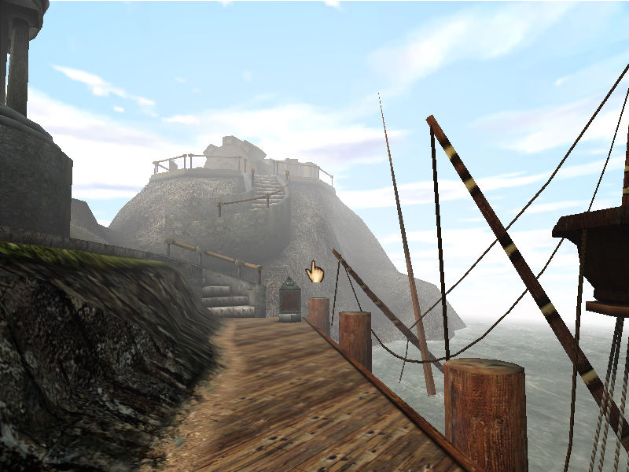

名稱：真神秘島3D／神秘島：互動3D版／迷霧之島3D (RealMyst: Interactive 3D Edition，英文版)
簡介：Cyan與SunSoft 2000年共同開發的冒險解謎遊戲，為「迷霧之島1」的重製版，由Mattel
代理發行 [待補]。


保護：光碟SafeDisc 1.50
備註：VirtualBox需搭配WineD3D，但貼圖仍有點問題，虛擬機建議使用VMware。
檔案：real_myst_patch_v1.11.rar = 1.11更新檔
nocd100.rar = 1.00免光碟檔
nocd111.rar = 1.11免光碟檔